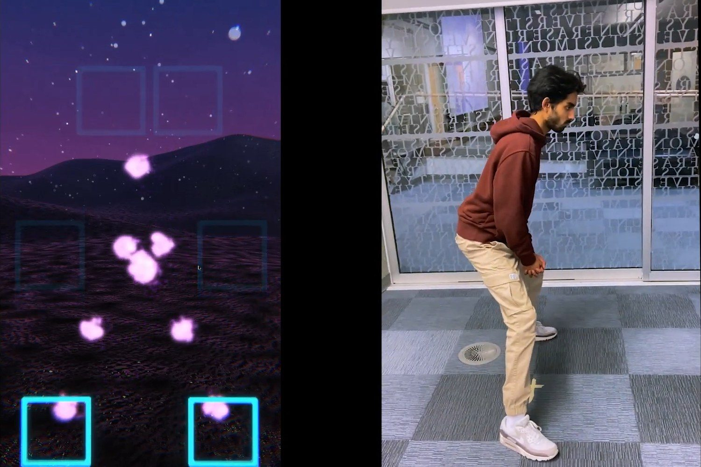
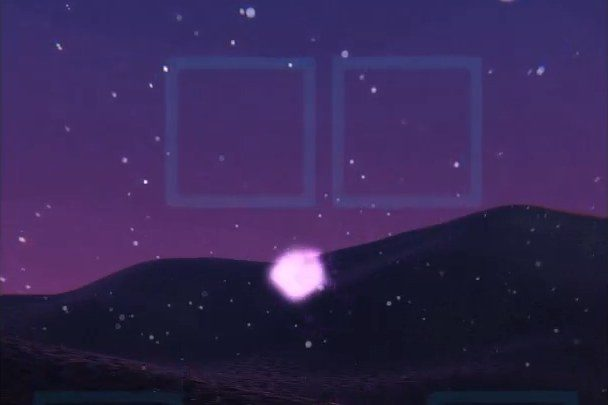
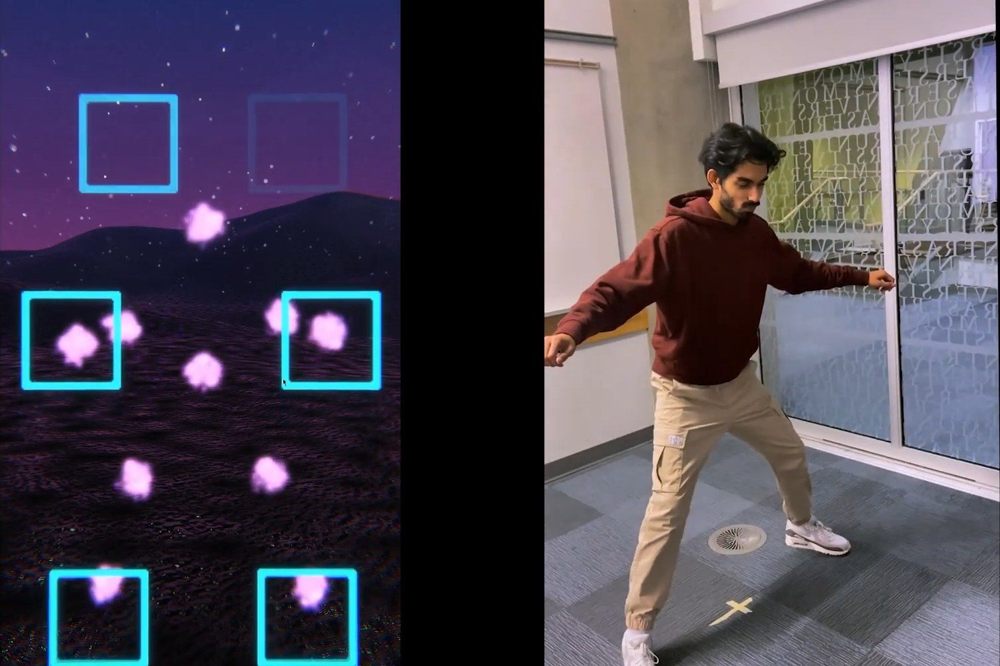
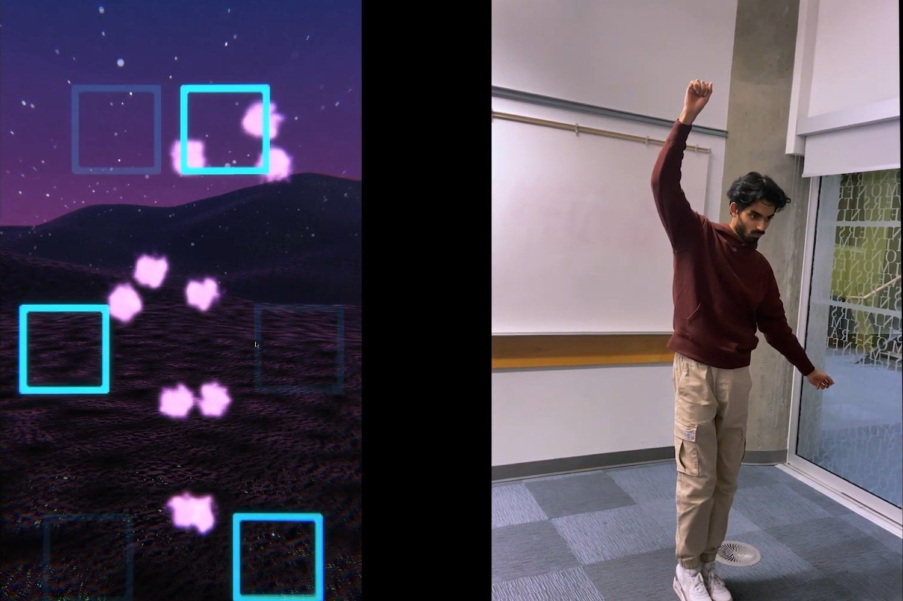
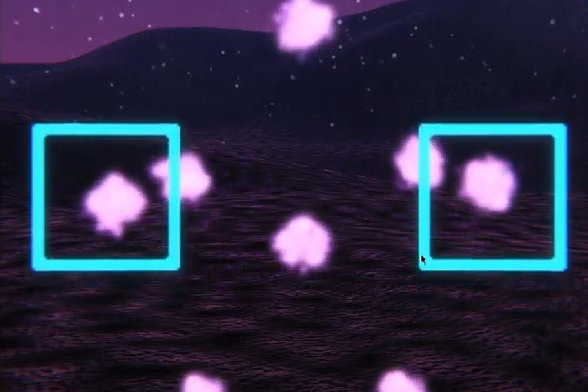

Kinesthesia

Kinesthesia
An embodied musical experience where you can control the instruments with your body parts and influence the sound with smaller movements. Run with a webcam!
What I built
- Composed and produced the four-bar loop and each instrument layer the six squares trigger.
- Implemented the mapping in Unity: webcam body tracking resolves which limb is inside which square, and each square drives its own instrument.
- Wrote the effect control — a limb's position inside a square feeds a slider that scales reverb, chorus and delay, so players shape the texture rather than the arrangement.
- Tuned the sensitivity curve and picked effects with enough audible character that the change reads as deliberate control instead of noise.
Watch Kinesthesia in motion
Demonstration
Watch me perform in front of my class at our project showcase!
Prototype elements
A progress report of our team halfway through development where we show the indvidual components.
The Story Behind Kinesthesia

Concept
The brief was open to interpretation, with one requirement: build an interactive system that a person operates with their body. Our team of three took that toward music, paired with particle visuals, and spent about a month on it.

How It Works
A webcam tracks the player, whose body is reflected back as a digital mirror on screen. Six squares float in that scene: one at floor level for each foot, one at mid-height for each hand, and one higher up for each raised hand. There is no square dedicated to the head, though the head can trigger the higher ones. Each square plays a different instrument, and moving the limb around inside a square changes the effects applied to it — reverb, chorus and delay.

The Audio Approach
The setup is similar to Harmony, but built around a mostly constant four-bar loop rather than an arrangement the player assembles. The loop stays put, so what a player shapes is the texture on top of it. Position inside a square is read in Unity and drives a slider that adds more or less of a specified effect, which is what puts the effects under the player's control rather than on a preset.

The Challenge
The hard part was making that in-square effect change both controllable and noticeable at once. It kept landing on one side or the other: either too sensitive to steer, or so subtle it became an afterthought. Finding the balance came down to picking the right effects — ones with enough audible character to register — and a lot of trial and error on the tuning.
Reception
I performed it in front of my class at our showcase. Sharing music I had made through such a different form of presentation felt great, and the audience — my classmates — seemed genuinely impressed by the concept. Several of them told me afterwards that ours was one of the more memorable projects.